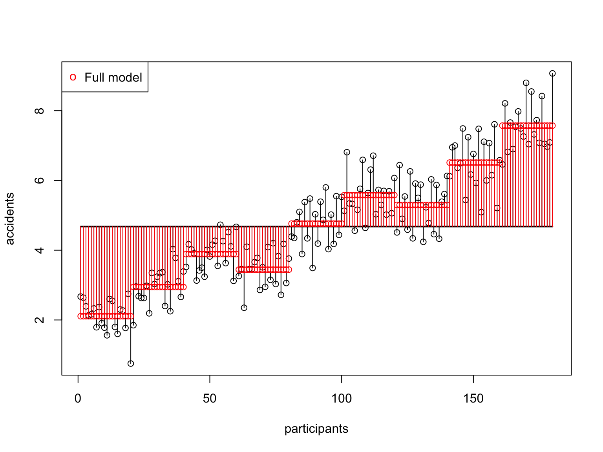
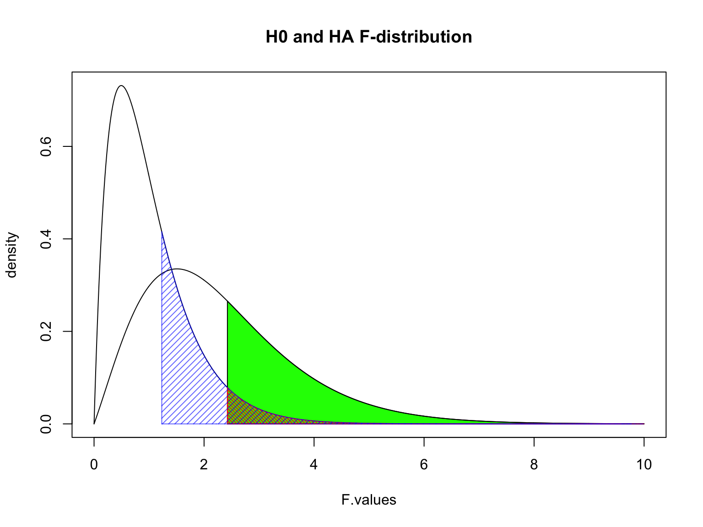

ANOVA
Independent factorial, repeated and mixed
Klinkenberg
7 oct 2020
Inhoud
Independent factorial ANOVA
Two or more independent variables with two or more categories. One dependent variable.
Independent factorial ANOVA
The independent factorial ANOVA analyses the variance of multiple independent variables (Factors) with two or more categories.
Effects and interactions:
- 1 dependent/outcome variable
- 2 or more independent/predictor variables
- 2 or more cat./levels
Assumptions
- Continuous variable
- Random sample
- Normaly distributed
- Shapiro-Wilk test
- Equal variance within groups
- Levene’s test
Formulas
| Variance | Sum of squares | df | Mean squares | F-ratio |
|---|---|---|---|---|
| Model | \(\text{SS}_{\text{model}} = \sum{n_k(\bar{X}_k-\bar{X})^2}\) | \(k_{model}-1\) | \(\frac{\text{SS}_{\text{model}}}{\text{df}_{\text{model}}}\) | \(\frac{\text{MS}_{\text{model}}}{\text{MS}_{\text{error}}}\) |
| \(\hspace{2ex}A\) | \(\text{SS}_{\text{A}} = \sum{n_k(\bar{X}_k-\bar{X})^2}\) | \(k_A-1\) | \(\frac{\text{SS}_{\text{A}}}{\text{df}_{\text{A}}}\) | \(\frac{\text{MS}_{\text{A}}}{\text{MS}_{\text{error}}}\) |
| \(\hspace{2ex}B\) | \(\text{SS}_{\text{B}} = \sum{n_k(\bar{X}_k-\bar{X})^2}\) | \(k_B-1\) | \(\frac{\text{SS}_{\text{B}}}{\text{df}_{\text{B}}}\) | \(\frac{\text{MS}_{\text{B}}}{\text{MS}_{\text{error}}}\) |
| \(\hspace{2ex}AB\) | \(\text{SS}_{A \times B} = \text{SS}_{\text{model}} - \text{SS}_{\text{A}} - \text{SS}_{\text{B}}\) | \(df_A \times df_B\) | \(\frac{\text{SS}_{\text{AB}}}{\text{df}_{\text{AB}}}\) | \(\frac{\text{MS}_{\text{AB}}}{\text{MS}_{\text{error}}}\) |
| Error | \(\text{SS}_{\text{error}} = \sum{s_k^2(n_k-1)}\) | \(N-k_{model}\) | \(\frac{\text{SS}_{\text{error}}}{\text{df}_{\text{error}}}\) | |
| Total | \(\text{SS}_{\text{total}} = \text{SS}_{\text{model}} + \text{SS}_{\text{error}}\) | \(N-1\) | \(\frac{\text{SS}_{\text{total}}}{\text{df}_{\text{total}}}\) |
Example
In this example we will look at the amount of accidents in a car driving simulator while subjects where given varying doses of speed and alcohol.
- Dependent variable
- Accidents
- Independent variables
- Speed
- None
- Small
- Large
- Alcohol
- None
- Small
- Large
- Speed
| person | alcohol | speed | accidents |
|---|---|---|---|
| 1 | 1 | 1 | 0 |
| 2 | 1 | 2 | 2 |
| 3 | 1 | 3 | 4 |
| 4 | 2 | 1 | 6 |
| 5 | 2 | 2 | 8 |
| 6 | 2 | 3 | 10 |
| 7 | 3 | 1 | 12 |
| 8 | 3 | 2 | 14 |
| 9 | 3 | 3 | 16 |
Data
SSmodel
| Variance | Sum of squares | df | Mean squares | F-ratio |
|---|---|---|---|---|
| Model | \(\text{SS}_{\text{model}} = \sum{n_k(\bar{X}_k-\bar{X})^2}\) | \(k_{model}-1\) | \(\frac{\text{SS}_{\text{model}}}{\text{df}_{\text{model}}}\) | \(\frac{\text{MS}_{\text{model}}}{\text{MS}_{\text{error}}}\) |
## speed alcohol accidents n
## 1 much much 7.5720 20
## 2 none much 5.2970 20
## 3 some much 6.5125 20
## 4 much none 3.8880 20
## 5 none none 2.1060 20
## 6 some none 2.9445 20
## 7 much some 5.5790 20
## 8 none some 3.4435 20
## 9 some some 4.7625 20## [1] 494.2205m.k1 = mean(subset(data, speed == "none" & alcohol == "none", select = "accidents")$accidents)
m.k2 = mean(subset(data, speed == "none" & alcohol == "some", select = "accidents")$accidents)
m.k3 = mean(subset(data, speed == "none" & alcohol == "much", select = "accidents")$accidents)
m.k4 = mean(subset(data, speed == "some" & alcohol == "none", select = "accidents")$accidents)
m.k5 = mean(subset(data, speed == "some" & alcohol == "some", select = "accidents")$accidents)
m.k6 = mean(subset(data, speed == "some" & alcohol == "much", select = "accidents")$accidents)
m.k7 = mean(subset(data, speed == "much" & alcohol == "none", select = "accidents")$accidents)
m.k8 = mean(subset(data, speed == "much" & alcohol == "some", select = "accidents")$accidents)
m.k9 = mean(subset(data, speed == "much" & alcohol == "much", select = "accidents")$accidents)
n.k1 = n.k2 = n.k3 = n.k4 = n.k5 = n.k6 = n.k7 = n.k8 = n.k9 = 20ss.m.k1 = n.k1 * (m.k1 - mean(accidents))^2
ss.m.k2 = n.k2 * (m.k2 - mean(accidents))^2
ss.m.k3 = n.k3 * (m.k3 - mean(accidents))^2
ss.m.k4 = n.k4 * (m.k4 - mean(accidents))^2
ss.m.k5 = n.k5 * (m.k5 - mean(accidents))^2
ss.m.k6 = n.k6 * (m.k6 - mean(accidents))^2
ss.m.k7 = n.k7 * (m.k7 - mean(accidents))^2
ss.m.k8 = n.k8 * (m.k8 - mean(accidents))^2
ss.m.k9 = n.k9 * (m.k9 - mean(accidents))^2
ss.model = sum(ss.m.k1,ss.m.k2,ss.m.k3,ss.m.k4,ss.m.k5,ss.m.k6,ss.m.k7,ss.m.k8,ss.m.k9)
ss.model## [1] 494.2205SSmodel visual
# Plot all data points
plot(accidents,
xlab = 'participants')
# With the mean
lines(1:n,rep(mean(accidents),n),col='black',lwd=2)
# The black lines are the total variance, the deviation from the mean.
segments(1:n, mean(accidents), 1:n, accidents)
# The model predicts the accidents scores
points(1:n,exp.accidents, col='red')
p <- recordPlot()
# The black lines are the total variance, the deviation from the mean.
segments(1:n, exp.accidents, 1:n, mean(accidents), col = "red")
# Add legend to plot
legend("topleft",
pch = c("o"),
col = c("red"),
legend = c("Full model") )
SSerror
| Variance | Sum of squares | df | Mean squares | F-ratio |
|---|---|---|---|---|
| Error | \(\text{SS}_{\text{error}} = \sum{s_k^2(n_k-1)}\) | \(N-k\) | \(\frac{\text{SS}_{\text{error}}}{\text{df}_{\text{error}}}\) |
v.k1 = var(subset(data, speed == "none" & alcohol == "none", select = "accidents")$accidents)
v.k2 = var(subset(data, speed == "none" & alcohol == "some", select = "accidents")$accidents)
v.k3 = var(subset(data, speed == "none" & alcohol == "much", select = "accidents")$accidents)
v.k4 = var(subset(data, speed == "some" & alcohol == "none", select = "accidents")$accidents)
v.k5 = var(subset(data, speed == "some" & alcohol == "some", select = "accidents")$accidents)
v.k6 = var(subset(data, speed == "some" & alcohol == "much", select = "accidents")$accidents)
v.k7 = var(subset(data, speed == "much" & alcohol == "none", select = "accidents")$accidents)
v.k8 = var(subset(data, speed == "much" & alcohol == "some", select = "accidents")$accidents)
v.k9 = var(subset(data, speed == "much" & alcohol == "much", select = "accidents")$accidents)ss.e.k1 = v.k1 * (n.k1 - 1)
ss.e.k2 = v.k2 * (n.k2 - 1)
ss.e.k3 = v.k3 * (n.k3 - 1)
ss.e.k4 = v.k4 * (n.k4 - 1)
ss.e.k5 = v.k5 * (n.k5 - 1)
ss.e.k6 = v.k6 * (n.k6 - 1)
ss.e.k7 = v.k7 * (n.k7 - 1)
ss.e.k8 = v.k8 * (n.k8 - 1)
ss.e.k9 = v.k9 * (n.k9 - 1)
ss.error = sum(ss.e.k1,ss.e.k2,ss.e.k3,ss.e.k4,ss.e.k5,ss.e.k6,ss.e.k7,ss.e.k8,ss.e.k9)
ss.error## [1] 66.34642SSerror visual

SSA Speed
| Variance | Sum of squares | df | Mean squares | F-ratio |
|---|---|---|---|---|
| \(\hspace{2ex}A\) | \(\text{SS}_{\text{A}} = \sum{n_k(\bar{X}_k-\bar{X})^2}\) | \(k_A-1\) | \(\frac{\text{SS}_{\text{A}}}{\text{df}_{\text{A}}}\) | \(\frac{\text{MS}_{\text{A}}}{\text{MS}_{\text{error}}}\) |
ss.s1 = n.s1 * (m.s1 - mean(accidents))^2
ss.s2 = n.s2 * (m.s2 - mean(accidents))^2
ss.s3 = n.s3 * (m.s3 - mean(accidents))^2
ss.speed = sum(ss.s1,ss.s2,ss.s3)
ss.speed## [1] 128.1639SSA Speed Visual

SSB Alcohol
| Variance | Sum of squares | df | Mean squares | F-ratio |
|---|---|---|---|---|
| \(\hspace{2ex}B\) | \(\text{SS}_{\text{B}} = \sum{n_k(\bar{X}_k-\bar{X})^2}\) | \(k_B-1\) | \(\frac{\text{SS}_{\text{B}}}{\text{df}_{\text{B}}}\) | \(\frac{\text{MS}_{\text{B}}}{\text{MS}_{\text{error}}}\) |
ss.a1 = n.a1 * (m.a1 - mean(accidents))^2
ss.a2 = n.a2 * (m.a2 - mean(accidents))^2
ss.a3 = n.a3 * (m.a3 - mean(accidents))^2
ss.alcohol = sum(ss.a1,ss.a2,ss.a3)
ss.alcohol## [1] 364.1458SSB Alcohol Visual

SSAB Alcohol x Speed
| Variance | Sum of squares | df | Mean squares | F-ratio |
|---|---|---|---|---|
| \(\hspace{2ex}AB\) | \(\text{SS}_{A \times B} = \text{SS}_{\text{model}} - \text{SS}_{\text{A}} - \text{SS}_{\text{B}}\) | \(df_A \times df_B\) | \(\frac{\text{SS}_{\text{AB}}}{\text{df}_{\text{AB}}}\) | \(\frac{\text{MS}_{\text{AB}}}{\text{MS}_{\text{error}}}\) |
# Sums of squares for the interaction between speed and alcohol
ss.speed.alcohol <- ss.model - ss.speed - ss.alcohol
ss.speed.alcohol## [1] 1.910727Mean Squares
Mean squares for:
- Speed
- Alcohol
- Speed \(\times\) Alcohol
\[\begin{aligned} F_{Speed} &= \frac{{MS}_{Speed}}{{MS}_{error}} \\ F_{Alcohol} &= \frac{{MS}_{Alcohol}}{{MS}_{error}} \\ F_{Alcohol \times Speed} &= \frac{{MS}_{Alcohol \times Speed}}{{MS}_{error}} \\ \end{aligned}\]
Interaction
\[F_{Alcohol \times Speed}\]
\(P\)-value
## [1] 1.231168
F.values = seq(0, 10, .01)
plot(F.values, df(F.values, df.speed.alcohol, df.error), type = "l", ylab="density", main = "H0 and HA F-distribution")
critical.value = qf(.95, df.speed.alcohol, df.error)
critical.range = seq(critical.value, 10, .01)
polygon(c(critical.range,rev(critical.range)),
c(critical.range*0, rev(df(critical.range, df.speed.alcohol, df.error, ncp = 5))), col = "green")
lines(F.values, df(F.values, df.speed.alcohol, df.error, ncp = 5))
polygon(c(critical.range,rev(critical.range)),
c(critical.range*0, rev(df(critical.range, df.speed.alcohol, df.error))), col = rgb(1,0,0,1), density = 40, angle = -45)
p.range = seq(F.speed.alcohol, 10, .01)
polygon(c(p.range,rev(p.range)),
c(p.range*0, rev(df(p.range, df.speed.alcohol, df.error))), col = rgb(0,0,1,.6), density = 20)
Contrast
Planned comparisons
- Exploring differences of theoretical interest
- Higher precision
- Higher power
Post-Hoc
Unplanned comparisons
- Exploring all possible differences
- Adjust T value for inflated type 1 error
Effect size
General effect size measures
- Amount of explained variance \(R^2\) also called eta squared \(\eta^2\).
- Omega squared \(\omega^2\)
Effect sizes of contrasts or post-hoc comparisons
- Cohen’s \(r\) gives the effect size for a specific comparison
- \(r_{Contrast} = \sqrt{\frac{t^2}{t^2+{df}}}\)
ANOVA
One-way repeated
One-way repeated measures ANOVA
The one-way repeated measures ANOVA analyses the variance of the model while reducing the error by the within person variance.
- 1 dependent/outcome variable
- 1 independent/predictor variable
- 2 or more levels
- All with same subjects
Assumptions
- Continuous dependent variable
- Normaly distributed
- Shapiro-Wilk
- Equality of variance within groups
- Mauchly’s test of Sphericity
Formulas
| Variance | Sum of Squares | df | Mean Squares | F-ratio |
|---|---|---|---|---|
| Between | \({SS}_{{between}} = {SS}_{{total}} - {SS}_{{within}}\) | \({DF}_{{total}}-{DF}_{{within}}\) | \(\frac{{SS}_{{between}}}{{DF}_{{between}}}\) | |
| Within | \({SS}_{{within}} = \sum{s_i^2(n_i-1)}\) | \((n_i-1)n\) | \(\frac{{SS}_{{within}}}{{DF}_{{within}}}\) | |
| • Model | \({SS}_{{model}} = \sum{n_k(\bar{X}_k-\bar{X})^2}\) | \(k-1\) | \(\frac{{SS}_{{model}}}{{DF}_{{model}}}\) | \(\frac{{MS}_{{model}}}{{MS}_{{error}}}\) |
| • Error | \({SS}_{{error}} = {SS}_{{within}} - {SS}_{{model}}\) | \((n-1)(k-1)\) | \(\frac{{SS}_{{error}}}{{DF}_{{error}}}\) | |
| Total | \({SS}_{{total}} = s_{grand}^2(N-1)\) | \(N-1\) | \(\frac{{SS}_{{total}}}{{DF}_{{total}}}\) |
Where \(n_i\) is the number of observations per person and \(k\) is the number of conditions. These two are equal for a one-way repeated ANOVA. Furthermore \(n\) is the number of subjects per condition and \(N\) is the total number of data points \(n \times k\).
Example
Measure driving ability in a driving simulator. Test in three consecutive conditions where participants come back to attend the next condition.
- Alcohol none
- Alcohol some
- Alcohol much
The data
\({MS}_{total}\)
# Assign to individual variables
none_alc = data$none_alc
some_alc = data$some_alc
much_alc = data$much_alc
total = c(none_alc,some_alc,much_alc)\[{MS}_{total} = \frac{{SS}_{{total}}}{{DF}_{{total}}} = s_{grand}^2\]
## [1] 0.9410458\({SS}_{total}\)
\[{DF_{total}} = N-1 \\ {SS}_{{total}} = s_{grand}^2(N-1)\]
## [1] 55.5217## [1] 55.5217\({SS}_{total}\) visual
# Set offset
offset = .2
# Calculate n
n = length(none_alc)
# Create plot
plot(none_alc,
xlab = 'participants',
ylab = 'Brokken',
xlim = c(.5,22),
ylim = c(3,7.5),
col='green')
points((1:n)-offset, some_alc, col='red')
points((1:n)+offset, much_alc, col='blue')
# Add the total mean
lines(c((1-offset),(n+offset)),rep(mean(total),2),col='black',lwd=2)
segments(1:n, mean(total), 1:n, none_alc)
segments(1:n-offset, mean(total), 1:n-offset, some_alc)
segments(1:n+offset, mean(total), 1:n+offset, much_alc)
text(n+offset,mean(total),expression(bar(X)[grand]),pos=4)

\({MS}_{within}\)
\[{MS}_{within} = \frac{{SS}_{{within}}}{{DF}_{{within}}} \\ {DF}_{within} = (n_i-1)n\]
n.i = 3 # Number of mesurements per individual (none, some, much)
n = 20 # Number of mesurements per group
DF_within = (n.i - 1) * n
DF_within## [1] 40\({SS}_{within}\)
\[{SS}_{{within}} = \sum{s_i^2(n_i-1)}\]
var_pp = apply(cbind(none_alc, some_alc, much_alc),1,var)
ss_pp = var_pp * (n.i - 1)
SS_within = sum(ss_pp); SS_within## [1] 48.45032mean_pp = apply(cbind(none_alc, some_alc, much_alc),1,mean)
sum(c((none_alc - mean_pp)^2,
(some_alc - mean_pp)^2,
(much_alc - mean_pp)^2))## [1] 48.45032\({SS}_{within}\) data
\({SS}_{within}\) visual
p
# Personal means
segments(1:n-offset, mean_pp, 1:n+offset, mean_pp, col='orange', lwd=3)
# The lines show the within deviation from the personal mean.
segments(1:n-offset, mean_pp, 1:n-offset, some_alc, col='orange', lwd=3)
segments(1:n, mean_pp, 1:n, none_alc, col='orange', lwd=3)
segments(1:n+offset, mean_pp, 1:n+offset, much_alc, col='orange', lwd=3)
# Add personal means symbols
for(i in 1:n) { text(i-(offset/2), mean_pp[i], expression(bar(X)[i]), pos=2, cex=.5)}
\({MS}_{between}\)
\[{MS}_{between} = \frac{{SS}_{{between}}}{{DF}_{{between}}}\]
\[{DF}_{between}-{DF}_{{within}} \\ {SS}_{between} = {SS}_{total} - {SS}_{within}\]
## [1] 7.071382## [1] 19\({MS}_{model}\)
\[{MS}_{model} = \frac{{SS}_{{model}}}{{DF}_{{model}}} \\ {DF}_{model} = k-1\]
## [1] 2\({SS}_{model}\)
\[{SS}_{model} = \sum{n_k(\bar{X}_k-\bar{X})^2}\]
# SS model
n_k1 = length(none_alc)
n_k2 = length(some_alc)
n_k3 = length(much_alc)
# Calculate sums of squares for the model
SS_k1 = n_k1 * (mean(none_alc) - mean(total))^2
SS_k2 = n_k2 * (mean(some_alc) - mean(total))^2
SS_k3 = n_k3 * (mean(much_alc) - mean(total))^2
SS_model = sum(SS_k1, SS_k2, SS_k3)
SS_model## [1] 38.63266\({SS}_{model}\) visual
p
# Add the no alcohol mean
lines(c((1),(n)),rep(mean(none_alc),2),col='green',lwd=2)
text(n+offset,mean(none_alc),expression(bar(X)[none]),pos=4)
# With the bit alcohol mean
lines(c((1-offset),(n-offset)),rep(mean(some_alc),2),col='red',lwd=2)
text(n+offset,mean(some_alc),expression(bar(X)[some]),pos=4)
# With the much alcohol mean
lines(c((1+offset),(n+offset)),rep(mean(much_alc),2),col='blue',lwd=2)
text(n+offset,mean(much_alc),expression(bar(X)[much]),pos=4)
# The lines show the model deviation from the total mean.
segments(1:n, mean(total), 1:n, mean(none_alc), col='green')
segments(1:n-offset, mean(total), 1:n-offset, mean(some_alc), col='red')
segments(1:n+offset, mean(total), 1:n+offset, mean(much_alc), col='blue')
\({MS}_{error}\)
\[\frac{{SS}_{error}}{{DF}_{error}} \\ {DF}_{error} = (n-1)(k-1)\]
## [1] 38\({SS}_{error}\)
\[{SS}_{error} = {SS}_{within} - {SS}_{model}\]
## [1] 9.817655F ratio
\[F = \frac{{MS}_{{model}}}{{MS}_{{error}}}\]
# Calculate mean squares
MS_model = SS_model / DF_model
MS_error = SS_error / DF_error
# Calculate F statistic
F = MS_model / MS_error
F## [1] 74.76537Visualize

F.values = seq(0, 100, .01)
plot(F.values, df(F.values, DF_model, DF_error), type = "l", ylab="density", main = "H0 and HA F-distribution")
critical.value = qf(.95, DF_model, DF_error)
critical.range = seq(critical.value, 100, .01)
polygon(c(critical.range,rev(critical.range)),
c(critical.range*0, rev(df(critical.range, DF_model, DF_error, ncp = 5))), col = "darkorange")
lines(F.values, df(F.values, DF_model, DF_error, ncp = 5))
polygon(c(critical.range,rev(critical.range)),
c(critical.range*0, rev(df(critical.range, DF_model, DF_error))), col = rgb(0,1,0,1), density = 40, angle = -45)
p.range = seq(F, 100, .01)
polygon(c(p.range,rev(p.range)),
c(p.range*0, rev(df(p.range, DF_model, DF_error))), col = rgb(0,0,1,.6), density = 20)
Contrast
Planned comparisons
- Exploring differences of theoretical interest
- Higher precision
- Higher power
Post-Hoc
Unplanned comparisons
- Exploring all possible differences
- Adjust T value for inflated type 1 error
Effect size
General effect size measures
- Amount of explained variance \(R^2\) also called eta squared \(\eta^2\).
- Omega squared \(\omega^2\)
Effect sizes of contrasts or post-hoc comparisons
- Cohen’s \(r\) gives the effect size for a specific comparison
- \(r_{Contrast} = \sqrt{\frac{t^2}{t^2+{df}}}\)
- \(r_{Contrast} = \sqrt{\frac{F(1,{df}_R)}{F(1,{df}_R)+{df}_R}}\)
Mixed design ANOVA
Mixed design
The mixed ANOVA analyses the variance of the model while reducing the error by the within person variance.
- 1 dependent/outcome variable
- 2 or more independent/predictor variable with different subjects
- 2 or more levels
- 2 or more independent/predictor variable with same subjects
- 2 or more levels
Assumptions
Same as repeated measures ANOVA and same as factorial ANOVA.
Example
- Dependent variable
- Accidents
- Independent variables
- Speed (same subjects)
- None
- Small
- Large
- Alcohol (same subjects)
- None
- Small
- Large
- Gender
- Males
- Females
- Speed (same subjects)
| person | gender | 1_1 | 1_2 | 1_3 | 2_1 | 2_2 | 2_3 | 3_1 | 3_2 | 3_3 |
|---|---|---|---|---|---|---|---|---|---|---|
| 1 | males | 1 | ||||||||
| 2 | males | 2 | ||||||||
| 3 | males | 3 | ||||||||
| 4 | males | 4 | ||||||||
| 5 | males | 5 | ||||||||
| 6 | males | 6 | ||||||||
| 7 | males | 7 | ||||||||
| 8 | males | 8 | ||||||||
| 9 | males | 9 | ||||||||
| 10 | females | 1 | ||||||||
| 12 | females | 2 | ||||||||
| 13 | females | 3 | ||||||||
| 14 | females | 4 | ||||||||
| 15 | females | 5 | ||||||||
| 16 | females | 6 | ||||||||
| 17 | females | 7 | ||||||||
| 18 | females | 8 | ||||||||
| 20 | females | 9 |
Data
Reshape data
data.long <- reshape(data,
idvar = "pp",
varying = list(3:11),
v.names = "Accidents",
direction = "long")
data.long[which(data.long$time == 1), "time"] = "1_1"
data.long[which(data.long$time == 2), "time"] = "1_2"
data.long[which(data.long$time == 3), "time"] = "1_3"
data.long[which(data.long$time == 4), "time"] = "2_1"
data.long[which(data.long$time == 5), "time"] = "2_2"
data.long[which(data.long$time == 6), "time"] = "2_3"
data.long[which(data.long$time == 7), "time"] = "3_1"
data.long[which(data.long$time == 8), "time"] = "3_2"
data.long[which(data.long$time == 9), "time"] = "3_3"
data.long$speed = NA
data.long$speed[grep("^1", data.long$time)] = "none"
data.long$speed[grep("^2", data.long$time)] = "small"
data.long$speed[grep("^3", data.long$time)] = "large"
data.long$alcohol = NA
data.long$alcohol[grep("_1$", data.long$time)] = "none"
data.long$alcohol[grep("_2$", data.long$time)] = "small"
data.long$alcohol[grep("_3$", data.long$time)] = "large"
data.long$pp <- as.factor(data.long$pp)
data.long$sekse <- as.factor(data.long$sekse)
data.long$speed <- as.factor(data.long$speed)
data.long$alcohol <- as.factor(data.long$alcohol)
data.long## pp sekse time Accidents speed alcohol
## 1.1 1 1 1_1 1.59 none none
## 2.1 2 2 1_1 2.18 none none
## 3.1 3 1 1_1 3.24 none none
## 4.1 4 2 1_1 2.18 none none
## 5.1 5 1 1_1 1.36 none none
## 6.1 6 2 1_1 2.18 none none
## 7.1 7 1 1_1 2.91 none none
## 8.1 8 2 1_1 4.26 none none
## 9.1 9 1 1_1 2.96 none none
## 10.1 10 2 1_1 1.67 none none
## 11.1 11 1 1_1 2.88 none none
## 12.1 12 2 1_1 1.24 none none
## 13.1 13 1 1_1 1.94 none none
## 14.1 14 2 1_1 3.29 none none
## 15.1 15 1 1_1 2.77 none none
## 16.1 16 2 1_1 2.79 none none
## 17.1 17 1 1_1 2.03 none none
## 18.1 18 2 1_1 1.33 none none
## 19.1 19 1 1_1 1.34 none none
## 20.1 20 2 1_1 1.10 none none
## 1.2 1 1 1_2 4.96 none small
## 2.2 2 2 1_2 4.66 none small
## 3.2 3 1 1_2 5.58 none small
## 4.2 4 2 1_2 5.70 none small
## 5.2 5 1 1_2 6.15 none small
## 6.2 6 2 1_2 5.83 none small
## 7.2 7 1 1_2 4.03 none small
## 8.2 8 2 1_2 5.48 none small
## 9.2 9 1 1_2 4.92 none small
## 10.2 10 2 1_2 4.13 none small
## 11.2 11 1 1_2 6.68 none small
## 12.2 12 2 1_2 6.74 none small
## 13.2 13 1 1_2 6.45 none small
## 14.2 14 2 1_2 4.52 none small
## 15.2 15 1 1_2 5.53 none small
## 16.2 16 2 1_2 5.41 none small
## 17.2 17 1 1_2 3.50 none small
## 18.2 18 2 1_2 3.73 none small
## 19.2 19 1 1_2 5.76 none small
## 20.2 20 2 1_2 6.40 none small
## 1.3 1 1 1_3 6.72 none large
## 2.3 2 2 1_3 5.84 none large
## 3.3 3 1 1_3 7.01 none large
## 4.3 4 2 1_3 6.02 none large
## 5.3 5 1 1_3 8.35 none large
## 6.3 6 2 1_3 7.07 none large
## 7.3 7 1 1_3 6.55 none large
## 8.3 8 2 1_3 6.34 none large
## 9.3 9 1 1_3 5.60 none large
## 10.3 10 2 1_3 4.96 none large
## 11.3 11 1 1_3 7.08 none large
## 12.3 12 2 1_3 6.30 none large
## 13.3 13 1 1_3 7.68 none large
## 14.3 14 2 1_3 5.46 none large
## 15.3 15 1 1_3 4.38 none large
## 16.3 16 2 1_3 8.40 none large
## 17.3 17 1 1_3 7.33 none large
## 18.3 18 2 1_3 5.23 none large
## 19.3 19 1 1_3 7.95 none large
## 20.3 20 2 1_3 8.18 none large
## 1.4 1 1 2_1 2.64 small none
## 2.4 2 2 2_1 4.43 small none
## 3.4 3 1 2_1 2.12 small none
## 4.4 4 2 2_1 3.00 small none
## 5.4 5 1 2_1 1.78 small none
## 6.4 6 2 2_1 3.06 small none
## 7.4 7 1 2_1 5.35 small none
## 8.4 8 2 2_1 2.89 small none
## 9.4 9 1 2_1 3.87 small none
## 10.4 10 2 2_1 2.52 small none
## 11.4 11 1 2_1 3.74 small none
## 12.4 12 2 2_1 1.72 small none
## 13.4 13 1 2_1 3.02 small none
## 14.4 14 2 2_1 2.53 small none
## 15.4 15 1 2_1 2.64 small none
## 16.4 16 2 2_1 1.84 small none
## 17.4 17 1 2_1 -0.06 small none
## 18.4 18 2 2_1 2.23 small none
## 19.4 19 1 2_1 1.54 small none
## 20.4 20 2 2_1 5.05 small none
## 1.5 1 1 2_2 3.74 small small
## 2.5 2 2 2_2 4.73 small small
## 3.5 3 1 2_2 7.12 small small
## 4.5 4 2 2_2 6.66 small small
## 5.5 5 1 2_2 5.57 small small
## 6.5 6 2 2_2 5.91 small small
## 7.5 7 1 2_2 4.93 small small
## 8.5 8 2 2_2 6.74 small small
## 9.5 9 1 2_2 5.12 small small
## 10.5 10 2 2_2 3.64 small small
## 11.5 11 1 2_2 4.27 small small
## 12.5 12 2 2_2 6.03 small small
## 13.5 13 1 2_2 6.44 small small
## 14.5 14 2 2_2 5.82 small small
## 15.5 15 1 2_2 5.84 small small
## 16.5 16 2 2_2 6.16 small small
## 17.5 17 1 2_2 6.01 small small
## 18.5 18 2 2_2 5.09 small small
## 19.5 19 1 2_2 6.28 small small
## 20.5 20 2 2_2 6.16 small small
## 1.6 1 1 2_3 5.93 small large
## 2.6 2 2 2_3 7.25 small large
## 3.6 3 1 2_3 7.43 small large
## 4.6 4 2 2_3 6.32 small large
## 5.6 5 1 2_3 8.10 small large
## 6.6 6 2 2_3 6.51 small large
## 7.6 7 1 2_3 7.21 small large
## 8.6 8 2 2_3 8.74 small large
## 9.6 9 1 2_3 6.80 small large
## 10.6 10 2 2_3 5.98 small large
## 11.6 11 1 2_3 6.66 small large
## 12.6 12 2 2_3 7.94 small large
## 13.6 13 1 2_3 9.22 small large
## 14.6 14 2 2_3 6.44 small large
## 15.6 15 1 2_3 7.82 small large
## 16.6 16 2 2_3 7.93 small large
## 17.6 17 1 2_3 8.19 small large
## 18.6 18 2 2_3 7.84 small large
## 19.6 19 1 2_3 7.60 small large
## 20.6 20 2 2_3 7.19 small large
## 1.7 1 1 3_1 4.68 large none
## 2.7 2 2 3_1 3.21 large none
## 3.7 3 1 3_1 4.99 large none
## 4.7 4 2 3_1 4.72 large none
## 5.7 5 1 3_1 5.03 large none
## 6.7 6 2 3_1 2.61 large none
## 7.7 7 1 3_1 6.06 large none
## 8.7 8 2 3_1 2.87 large none
## 9.7 9 1 3_1 3.01 large none
## 10.7 10 2 3_1 5.37 large none
## 11.7 11 1 3_1 3.97 large none
## 12.7 12 2 3_1 3.99 large none
## 13.7 13 1 3_1 4.76 large none
## 14.7 14 2 3_1 4.48 large none
## 15.7 15 1 3_1 5.87 large none
## 16.7 16 2 3_1 5.04 large none
## 17.7 17 1 3_1 5.57 large none
## 18.7 18 2 3_1 5.73 large none
## 19.7 19 1 3_1 4.65 large none
## 20.7 20 2 3_1 5.97 large none
## 1.8 1 1 3_2 6.93 large small
## 2.8 2 2 3_2 3.78 large small
## 3.8 3 1 3_2 6.66 large small
## 4.8 4 2 3_2 4.52 large small
## 5.8 5 1 3_2 5.71 large small
## 6.8 6 2 3_2 6.09 large small
## 7.8 7 1 3_2 6.27 large small
## 8.8 8 2 3_2 7.01 large small
## 9.8 9 1 3_2 6.06 large small
## 10.8 10 2 3_2 6.01 large small
## 11.8 11 1 3_2 5.07 large small
## 12.8 12 2 3_2 6.36 large small
## 13.8 13 1 3_2 3.67 large small
## 14.8 14 2 3_2 5.73 large small
## 15.8 15 1 3_2 3.74 large small
## 16.8 16 2 3_2 6.82 large small
## 17.8 17 1 3_2 4.53 large small
## 18.8 18 2 3_2 6.33 large small
## 19.8 19 1 3_2 5.64 large small
## 20.8 20 2 3_2 7.66 large small
## 1.9 1 1 3_3 9.51 large large
## 2.9 2 2 3_3 10.71 large large
## 3.9 3 1 3_3 9.49 large large
## 4.9 4 2 3_3 9.39 large large
## 5.9 5 1 3_3 9.83 large large
## 6.9 6 2 3_3 10.78 large large
## [ reached 'max' / getOption("max.print") -- omitted 14 rows ]ezANOVA
Results
## $ANOVA
## Effect DFn DFd F p p<.05 ges
## 2 sekse 1 18 0.1077087 7.465548e-01 0.0007311564
## 3 speed 2 36 72.4476990 2.397451e-13 * 0.4015560297
## 5 alcohol 2 36 277.0168332 1.372975e-22 * 0.7868791099
## 4 sekse:speed 2 36 0.3991618 6.738146e-01 0.0036833617
## 6 sekse:alcohol 2 36 0.8712076 4.270814e-01 0.0114784599
## 7 speed:alcohol 4 72 8.8294785 7.389026e-06 * 0.1877092126
## 8 sekse:speed:alcohol 4 72 0.5055611 7.317469e-01 0.0130588199
##
## $`Mauchly's Test for Sphericity`
## Effect W p p<.05
## 3 speed 0.8800059 0.3373864
## 4 sekse:speed 0.8800059 0.3373864
## 5 alcohol 0.8038784 0.1563573
## 6 sekse:alcohol 0.8038784 0.1563573
## 7 speed:alcohol 0.5663362 0.4095287
## 8 sekse:speed:alcohol 0.5663362 0.4095287
##
## $`Sphericity Corrections`
## Effect GGe p[GG] p[GG]<.05 HFe p[HF] p[HF]<.05
## 3 speed 0.8928619 3.800426e-12 * 0.9845876 3.566807e-13 *
## 4 sekse:speed 0.8928619 6.510606e-01 0.9845876 6.706989e-01
## 5 alcohol 0.8360354 3.019302e-19 * 0.9116081 8.686650e-21 *
## 6 sekse:alcohol 0.8360354 4.111469e-01 0.9116081 4.188997e-01
## 7 speed:alcohol 0.8325812 3.438992e-05 * 1.0442660 7.389026e-06 *
## 8 sekse:speed:alcohol 0.8325812 6.988740e-01 1.0442660 7.317469e-01
##
## $aov
##
## Call:
## aov(formula = formula(aov_formula), data = data)
##
## Grand Mean: 5.539611
##
## Stratum 1: pp
##
## Terms:
## sekse Residuals
## Sum of Squares 0.126405 21.124468
## Deg. of Freedom 1 18
##
## Residual standard error: 1.08332
## 8 out of 9 effects not estimable
## Estimated effects are balanced
##
## Stratum 2: pp:speed
##
## Terms:
## speed sekse:speed Residuals
## Sum of Squares 115.92016 0.63868 28.80096
## Deg. of Freedom 2 2 36
##
## Residual standard error: 0.894442
## 8 out of 12 effects not estimable
## Estimated effects may be unbalanced
##
## Stratum 3: pp:alcohol
##
## Terms:
## alcohol sekse:alcohol Residuals
## Sum of Squares 637.8497 2.0060 41.4462
## Deg. of Freedom 2 2 36
##
## Residual standard error: 1.072979
## 8 out of 12 effects not estimable
## Estimated effects may be unbalanced
##
## Stratum 4: pp:speed:alcohol
##
## Terms:
## speed:alcohol sekse:speed:alcohol Residuals
## Sum of Squares 39.92183 2.28586 81.38565
## Deg. of Freedom 4 4 72
##
## Residual standard error: 1.063182
## Estimated effects may be unbalancedMauchly’s Test for Sphericity
## Effect W p p<.05
## 3 speed 0.8800059 0.3373864
## 4 sekse:speed 0.8800059 0.3373864
## 5 alcohol 0.8038784 0.1563573
## 6 sekse:alcohol 0.8038784 0.1563573
## 7 speed:alcohol 0.5663362 0.4095287
## 8 sekse:speed:alcohol 0.5663362 0.4095287